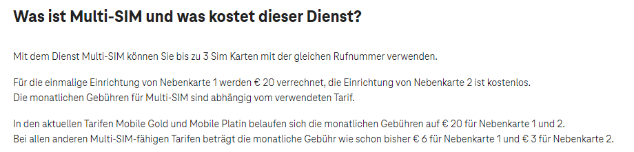

Hallo,
Ich würd gerne wissen ob mich eine eSIM für eine Smartwatch extra kosten würde. In Mein Magenta steht nichts von kosten.
@MyNameIsJan , und willkommen hier in der Magenta Community.
Das eSIM Profil selber nichts, aber der damit verbundene Zusatz Vertrag vermutlich schon.
Wenn du schon einen Handy Vertrag hast, kannst du für die Smartwatch einen Zusatz Vertrag anmelden.
Für diese gibt es wohl eigene Tarife.
Näheres kann man dir aber entweder per Serviceline 0676 2000, oder direkt in einem Magenta Shop (Werktags) mitteilen.
guck mal hier .

Eine eSIM für eine Smart Watch ist ja nichts anderes als eine Neben-SIM-Karte oder auch Multi-SIM genannt.
LG JD.